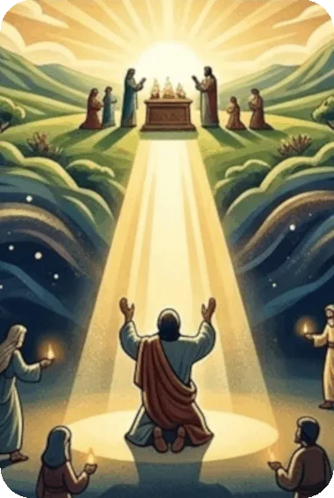
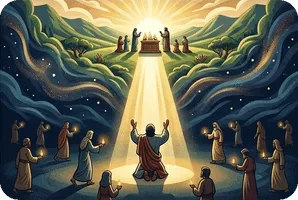

Zephaniah pronounces the Lord’s judgment on the whole earth, on Judah, on the surrounding nations, on Jerusalem, and on all nations. This is followed by proclamations of the Lord’s blessing on all nations and especially on the faithful remnant of His people in Judah.
Zephaniah had the courage to speak bluntly because he knew he was proclaiming the Word of the Lord. His book begins with "The word of the Lord" and ends with "says the Lord." He knew that neither the many gods the people worshiped nor even the might of the Assyrian army could save them. God is gracious and compassionate, but when all His warnings are ignored, judgment is to be expected. God’s day of judgment is frequently mentioned in the Scriptures. The prophets called it the "Day of the Lord." They referred to various events such as the fall of Jerusalem as manifestations of God’s Day, each of which pointed toward the ultimate Day of the Lord.
Zephaniah’s message of judgment and encouragement contains three major doctrines: 1) God is sovereign over all nations. 2) The wicked will be punished and the righteous will be vindicated on the day of judgment. 3) God blesses those who repent and trust in Him.
Foreshadowings: The final blessings on Zion pronounced in 3 : 14 – 20 are largely unfulfilled, leading us to conclude that these are messianic prophecies that await the Second Coming of Christ to be completed. The Lord has taken away our punishment only through Christ who came to die for the sins of His people (Zephaniah 3 : 15; John 3 : 16). But Israel has not yet recognized her true Savior. This is yet to happen (Romans 11 : 25 – 27).
The promise of peace and safety for Israel, a time when their King is in their midst, will be fulfilled when Christ returns to judge the world and redeem it for Himself. Just as He ascended to heaven after His resurrection, so will He return and set up a new Jerusalem on earth (Revelation 21). At that time, all God’s promises to Israel will be fulfilled.
Summary of the Book of Zephaniah from GotQuestions.org — is a popular Christian website and "parachurch" ministry that provides answers to a vast array of questions about the Bible, theology, and spiritual life.
Do you have a question? Submit your Bible Questions to GotQuestions.org No need to sign up, just use your email to receive notifications from any answers. Also browse their website for many questions that may answer your questions.
For personal questions, always pray first to God and seek answers through deep prayers. That may answer deep questions in your heart, and mind, as only God, Holy Spirit and Jesus can see through and through on your feelings, thoughts and situation, better than any man can.